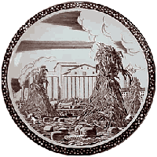

| Rockwell Kent
American Art Deco artist
|
New York artist Rockwell
Kent (1882-1971), a printmaker and illustrator, was
hired by Californian company Vernon
Kilns in the late 1930's to make designs for ceramic
wares in series such as 'Our America' and 'Early California'.
These designs featured illustrations of many of America’s
diverse icons, such as the Oakland Bridge (main image, left).
Kent also wrote a bestseller, A
Journal of Quiet Adventure in Alaska, which was
published in 1920. |
|
Somewhat typical of the style of the era, Kent's imagery bears
a striking resemblance to German Jugendstil or Soviet agit-prop
pottery. During the McCarthy-era of the 1950’s, Kent was
actually suspected of being a Communist. However, in contrast
to the ceramics of the then Soviet political adversary, Kent's
imagery elevated American technology, the American Way of Life
and the American worker to hero status. |
|

More Articles
More Artists of the Week
|